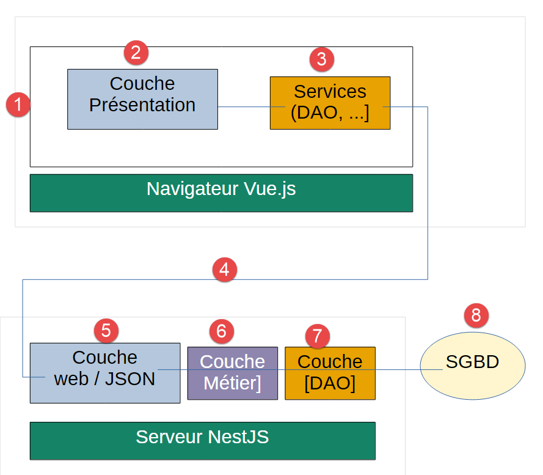
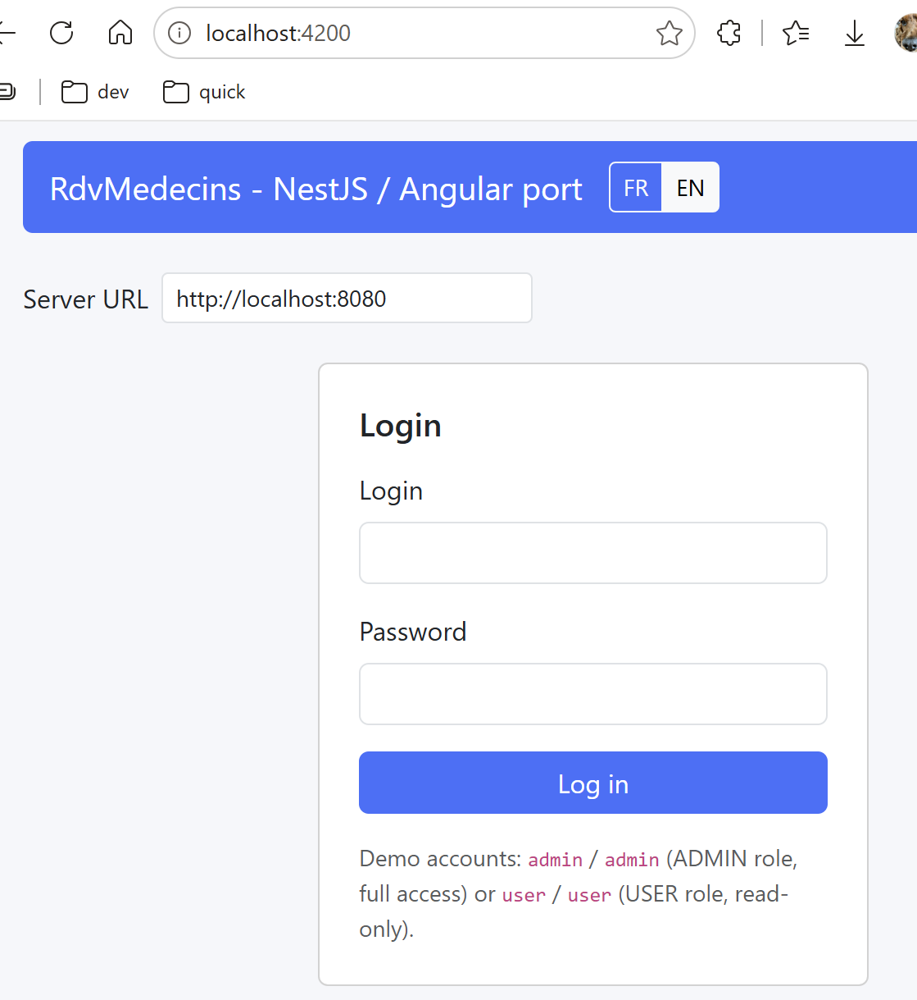

1. Introduction
The document’s PDF is |HERE|.
The document’s codes are |HERE|.
This document is a product of Anthropic’s IA Claude. Its purpose is to transpose the document [Un exemple de client / serveur - AngularJS 1.x / Spring 4 ] in two ways:
- the client AngularJS 1.x is replaced by a client [Vue.js] 3;
- the Java Spring web framework MVC is replaced by the web framework NestJS;
Claude from Anthropic (IA) did most of the work (90%):
- Code generation: Claude generated all of the code. I simply tested it by following the generated course;
- Course generation in ODT format: Claude generated several versions at my request. This is where I was primarily involved.
Note 1: If the reader’s primary goal is to “learn NestJS,” a simpler example is available in the document [Introduction au langage TypeScript et au framework web NestJS par l’exemple ]. The reader can then return to this document to understand the Vue.js client framework.
Note 2: This document frequently refers to version [React] of this course. This refers to course [Un exemple de client / serveur - React / NestJS (2026)]. In addition, version [Angular] of this course is also mentioned: [Un exemple de client / serveur - Angular / NestJS (2026)]
Serge Tahé, September 2026
==
This document is a follow-up to the course “A Client/Server Example - AngularJS 1.x / Spring 4,” written in 2014. That original document built a small application for scheduling medical appointments (“[RdvMedecins]”) using a Spring 4 / Spring Data / Spring MVC server and a AngularJS 1.x client.
Twelve years later, the two frameworks used have evolved significantly—or have even been replaced in common use:
- on the server side, [NestJS] has established itself as one of the most widely used Node.js/TypeScript frameworks most widely used for building structured web applications, with a philosophy similar to that of Spring (modules, controllers, services, dependency injection) but within the JavaScript/TypeScript ecosystem;
- On the client side, AngularJS 1.x was completely rewritten starting in 2016 under the name [Angular] (2, 4, 5… up to version 22) - the approach taken by the [Angular] / [NestJS] variant in this course. This document takes a different approach: [Vue.js] (created by Evan You in 2014, following an experiment at Google with AngularJS), a “progressive” framework: a core focused on the view layer, complemented by its own component format—.vue files (see Chapter 4).
The goal of this document is to revisit the original case study—the same application, the same features, the same database—and rebuild it using current tools, while maintaining as much of the same educational progression as the 2014 document as possible.
1.1. A Step-by-Step Reconstruction
The original document was about 300 pages long and covered, in addition to the application’s core functionality—role-based authentication (Spring Security)—twelve progressive examples for learning AngularJS 1.x step by step. Reconstructing all of this content at once would be both time-consuming and difficult to digest.
This document therefore covers the first two steps of the reconstruction:
- the application’s general architecture (unchanged in principle);
- the database (unchanged, except for the addition of the [users] table);
- the complete [NestJS] server, with all features for viewing and booking/canceling appointments;
- token-based authentication (JWT) and role-based access control (ADMIN/USER), equivalent to the Spring Security layer in the original document;
- the corresponding [Vue.js] client, with the same features, a login screen, a Bootstrap interface tailored to the logged-in user’s role, and the ability to switch the interface between French and English ([vue-i18n]).
Two features of the original document are, at this stage, excluded from this document: the original client’s “debug” mode (display of the raw template of the current view), which has been deliberately omitted from this port (see Chapter 6 for the rationale behind this decision), and the configuration of an artificial network delay, which has been deferred to a later stage.
1.2. Who This Document Is Intended For
This document assumes no prior knowledge of either [NestJS] or [Vue.js]. Each new concept (decorator, dependency injection, component, signal, etc.) is explained as it appears, in as much detail as possible—even for readers who have never written a single line of TypeScript.
However, some basic knowledge is helpful for getting the most out of this document:
- a basic understanding of the JavaScript language (variables, functions, arrays, objects);
- a basic understanding of HTTP data exchanges in a web application (GET/POST methods, JSON format);
- common tags in the HTML language;
- using the command line (cd, npm install…).
You do not need to be familiar with the TypeScript language (used on both the server and client sides) beforehand: it is a superset of JavaScript that adds a type system, which is explained throughout the document whenever it is used. Interested readers may consult the document [Introduction au langage TypeScript et au framework NestJS (2026)], which explains TypeScript in detail.
1.3. The Application Architecture
The general architecture of the application has not changed since the original document:
- a web server delivers a single HTML/CSS/JS, containing a [Vue.js] application built on the Component model (view + associated logic), which relies on services to communicate with the server;
- the user interacts with the views displayed in the browser. The user’s actions sometimes require a request to the server [NestJS], which processes the request and returns a response JSON (JavaScript Object Notation); this response is used to update the view presented to the user.
The application under consideration will have the following architecture:

- In [1], the user of the [Vue.js] application queries the [présentation] and [2] layers of that application;
- to perform the action requested by the user, the [présentation] and [2] layers may query the [Services] and [3] layers;
- To provide the requested service, the [3] layer may need to query the remote server JSON—implemented by [NestJS]—via [4];
- Depending on the request received in [5], the [6-8] layers may be queried;
- the server’s response returns the [2-8] layers in reverse order;
- The view displayed to the user, [1], reflects this response;
Note: If you’re confused by the project architecture, refer back to this diagram. Please note that SGBD is processed by the server, not by the client.
1.4. Tools Used
This document uses the following tools (their installation is detailed in Chapter 2):
- Node.js (version 22 or later) and its package manager npm—the equivalent, within the JavaScript ecosystem, of what Java + Maven were for the original Spring server;
- Visual Studio Code, a free code editor, with its TypeScript extensions—the equivalent of Spring Tool Suite (STS) and WebStorm used in the original document;
- [NestJS] CLI ([@nestjs/cli]), a command-line tool that generates the server project structure and launches its development server; On the client side, [Vite] requires no global installation—it can be used directly via npm on the project included with this document;
- [MySQL] 8 for the database (the original document used [MySQL] 5—the relational schema itself remains unchanged);
- Postman (or any other HTTP client), to test the server’s URL that respond to POST requests (/ajouterRv, /supprimerRv)—a browser can only test GET requests.
1.5. Application Features
The “business” features of the [RdvMedecins] application remain unchanged from the original document; access control, however, is slightly more robust than in the original (see the table below):
- A medical practice employs several doctors, each with their own consultation time slots;
- a user must log in (username/password) to access the application;
- Once logged in, the user can select a doctor and a day, and view the doctor’s schedule for that day: each time slot appears either available or booked;
- a user with the role ADMIN can also book an available time slot for a patient of their choice and cancel an existing appointment;
- A user with the role USER can view the schedules but cannot book or cancel (read-only access)—a deliberate difference from the original document, where the role USER was used solely to illustrate a denial of access and could not view anything at all (see Chapter 3, “Authentication” section, for the rationale behind this choice).

1.6. What Has Changed, What Has Not Changed
Original document (2014) | This document (2026) | |
[MySQL] 5, tables MEDECINS/CLIENTS/CRENEAUX/RV | [MySQL] 8, same tables, same columns, same constraints | |
Java, Spring 4, Spring Data (JPA/Hibernate), Spring MVC | TypeScript, [NestJS], [TypeORM], same as URL | |
JavaScript, AngularJS, 1.x, bower | TypeScript, [Vue.js] 3 (API composition, setup script), npm | |
Bootstrap 3 | Bootstrap 5 | |
Spring Security, HTTP Basic, roles in 3 tables; only ADMIN uses the application | Passport/JWT ([@nestjs/passport], [@nestjs/jwt]), a signed token presented with each request, roles in a single column, ADMIN full access, and USER read-only | |
angular-translate library | [vue-i18n] |
1.7. Organization of this document
- Setting up the development environment—installing the tools, creating the database, and starting the server and client for the first time.
- Introduction to [NestJS]—the basics of the framework (modules, controllers, providers), with a mini-project to get started.
- The [NestJS] server for the [RdvMedecins] application—the database, [TypeORM] entities, the DAO layer, the business layer, the web layer, and JWT token-based authentication and roles.
- Introduction to [Vue.js]—the basics of the framework (single-file components, ref/reactive, composables, provide/inject), with a review of concepts already covered in [Angular].
- The [Vue.js] client for the [RdvMedecins] application—the client architecture, each of its components (including the login screen), the Bootstrap interface, switching between French and English in the interface, and a step-by-step walkthrough of the complete application.
- Conclusion and next steps.